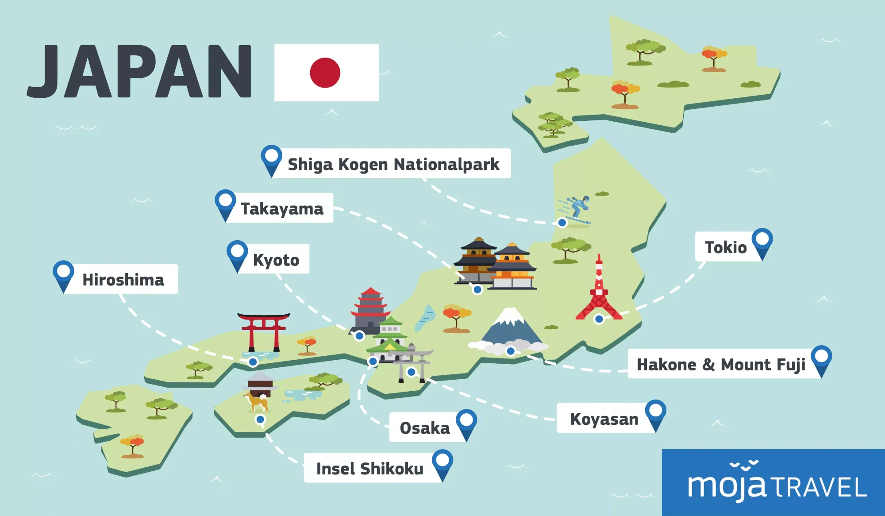

Die besten Sehenswürdigkeiten
Tokio bietet unzählige Orte, die man gesehen haben muss. Hier sind die beliebtesten Highlights für Ihre Reise:
- Sensō-ji: Der älteste Tempel Tokios in Asakusa.
- Tokyo Skytree: Genießen Sie einen Ausblick aus über 350 Metern Höhe.
- Shibuya Crossing: Erleben Sie das berühmte Fußgänger-Chaos hautnah.

← Zurück zur Übersicht